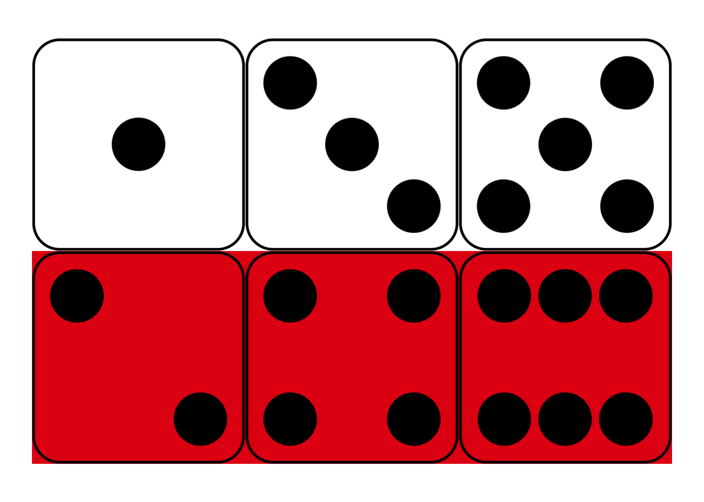
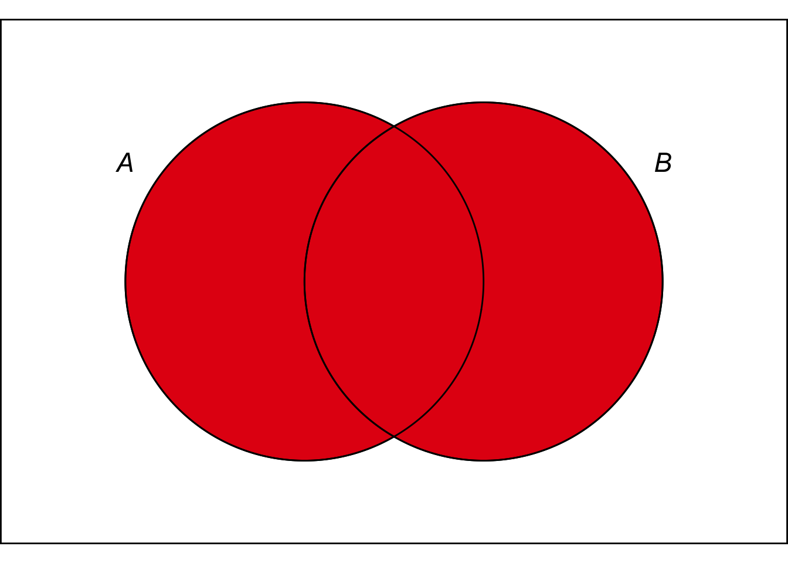

5 Calculating Probabilities
Imagine you’re going to flip a fair coin twice. You could get two heads, two tails, or one of each. How probable is each outcome?
It’s tempting to say they’re equally probable, \(1/3\) each. But actually the first two are only \(1/4\) likely, while the last is \(1/2\) likely. Why?
There are actually four possible outcomes here, but we have to consider the order of events to see how. If you get one each of heads and tails, what order will they come in? You could get the head first and then the tail, or the reverse.
So there are four possible sequences: HH, TT, HT, and TH. And all four sequences are equally likely, a probability of \(1/4\).
How do we know each sequence has \(1/4\) probability though? And how does that tell us the probability is \(1/2\) that you’ll get one each of heads and tails? We need to introduce some mechanics of probability to settle these questions.
5.1 Multiplying Probabilities
We denote the probability of proposition \(A\) with \(Pr(A)\). For example, \(Pr(A)=2/3\) means there’s a \(2/3\) chance \(A\) is true.
Now, our coin is fair, and by definition that means it always has a \(1/2\) chance of landing heads and a \(1/2\) chance of landing tails. For a single toss, we can use \(H\) for the proposition that it lands heads, and \(T\) for the proposition that it lands tails. We can then write \(Pr(H) = 1/2\) and \(Pr(T) = 1/2\).
For a sequence of two tosses, we can use \(H_1\) for heads on the first toss, and \(H_2\) for heads on the second toss. Similarly, \(T_1\) and \(T_2\) represent tails on the first and second tosses, respectively. The four possible sequences are then expressed by the complex propositions:
- \(H_1 \,\&\, H_2\),
- \(T_1 \,\&\, T_2\),
- \(H_1 \,\&\, T_2\),
- \(T_1 \,\&\, H_2\).
We want to calculate the probabilities of these propositions. For example, we want to know what number \(Pr(H_1 \,\&\, H_2)\) is equal to.
Because the coin is fair, we know \(Pr(H_1) = 1/2\) and \(Pr(H_2) = 1/2\). The probability of heads on any given toss is always \(1/2\), no matter what came before. To get the probability of \(H_1 \,\&\, H_2\) it’s then natural to compute: \[ \begin{aligned} Pr(H_1 \,\&\, H_2) &= Pr(H_1) \times Pr(H_2)\\ &= 1/2 \times 1/2\\ &= 1/4. \end{aligned} \] And this is indeed correct, but only because the coin is fair and thus the tosses are independent. The following is a general rule of probability:
- The Multiplication Rule
If \(A\) and \(B\) are independent, then \(Pr(A \,\&\, B) = Pr(A) \times Pr(B)\).
So, because our two coin tosses are independent, we can multiply to calculate \(Pr(H_1 \,\&\, H_2) = 1/4\). And the same reasoning applies to all four possible sequences, so we have: \[ \begin{aligned} Pr(H_1 \,\&\, H_2) &= 1/4,\\ Pr(T_1 \,\&\, T_2) &= 1/4,\\ Pr(H_1 \,\&\, T_2) &= 1/4,\\ Pr(T_1 \,\&\, H_2) &= 1/4. \end{aligned} \]
The Multiplication rule only applies to independent propositions. Otherwise it gives the wrong answer.
For example, the propositions \(H_1\) and \(T_1\) are definitely not independent. If the coin lands heads on the first toss (\(H_1\)), that drastically alters the chances of tails on the first toss (\(T_1\)). It changes that probability to zero! If you were to apply the Multiplication Rule though, you would get \(Pr(H_1 \,\&\, T_1) = Pr(H_1) \times Pr(T_1) = 1/2 \times 1/2 = 1/4\), which is definitely wrong.
Only use the Multiplication Rule on independent propositions.
5.2 Adding Probabilities
We observed that you can get one head and one tail two different ways. You can either get heads then tails (\(H_1 \,\&\, T_2\)), or you can get tails then heads (\(T_1 \,\&\, H_2\)). So the logical expression for “one of each” is:
\[ (H_1 \,\&\, T_2) \vee (T_1 \,\&\, H_2). \]
This proposition is a disjunction: its main connective is \(\vee\). How do we calculate the probability of a disjunction?
- The Addition Rule
If \(A\) and \(B\) are mutually exclusive, then \(Pr(A \vee B) = Pr(A) + Pr(B)\).
In this case the two sides of our disjunction are mutually exclusive. They describe opposite orders of affairs. So we can apply the Addition Rule to calculate:
\[ \begin{aligned} Pr((H_1 \,\&\, T_2) \vee (T_1 \,\&\, H_2)) &= Pr(H_1 \,\&\, T_2) + Pr(T_1 \,\&\, H_2)\\ &= 1/4 + 1/4\\ &= 1/2. \end{aligned} \]
This completes the solution to our opening problem. We’ve now computed the three probabilities we wanted:
- \(Pr(\mbox{2 heads}) = Pr(H_1 \,\&\, H_2) = 1/2 \times 1/2 = 1/4\),
- \(Pr(\mbox{2 tails}) = Pr(T_1 \,\&\, T_2) = 1/2 \times 1/2 = 1/4\),
- \(Pr(\mbox{One of each}) = Pr((H_1 \,\&\, T_2) \vee (T_1 \,\&\, H_2)) = 1/4 + 1/4 = 1/2\).
In the process we introduced two central rules of probability, one for \(\,\&\,\) and one for \(\vee\). The multiplication rule for \(\,\&\,\) only applies when the propositions are independent. The addition rule for \(\,\vee\,\) only applies when the propositions are mutually exclusive.
Why does the addition rule for \(\vee\) sentences only apply when the propositions are mutually exclusive? Well imagine the weather forecast says there’s a \(90\%\) chance of rain in the morning, and there’s also a \(90\%\) chance of rain in the afternoon. What’s the chance it’ll rain at some point during the day, either in the morning or the afternoon? If we calculate \(Pr(M \vee A) = Pr(M) + Pr(A)\), we get \(90\% + 90\% = 180\%\), which doesn’t make any sense. There can’t be a \(180\%\) chance of rain tomorrow.
The problem is that \(M\) and \(A\) are not mutually exclusive. It could rain all day, both morning and afternoon. We’ll see the correct way to handle this kind of situation in Chapter 7. In the meantime just be careful:
Only use the Addition Rule on mutually exclusive propositions.
5.3 Exclusivity vs. Independence
Figure 5.1: Mutually exclusive propositions don’t overlap
Exclusivity and independence can be hard to keep straight at first. One way to keep track of the difference is to remember that mutually exclusive propositions don’t overlap, but independent propositions usually do. Independence means the truth of one proposition doesn’t affect the chances of the other. So if you find out that \(A\) is true, \(B\) still has the same chance of being true. Which means there have to be some \(B\) possibilities within the \(A\) circle (unless the probability of \(A\) was zero to start with).
 Figure 5.2: Independent propositions do overlap (unless one of them has zero probability).
So independence and exclusivity are very different. Generally speaking, exclusive propositions are not independent, and independent propositions are not exclusive.
There is one exception. If \(\p(A) = 0\), then \(A\) and \(B\) can be both independent and mutually exclusive. If they’re mutually exclusive, the probability of \(A\) just stays \(0\) after \(B\) we learn \(B\). But otherwise, independence and mutual exclusivity are incompatible with one another.
Another marker that may help you keep these two concepts straight: exclusivity is a concept of deductive logic. It’s about whether it’s possible for both propositions to be true (even if that possibility is very unlikely). But independence is a concept of inductive logic. It’s about whether one proposition being true changes the probability of the other being true.
5.4 Tautologies, Contradictions, and Equivalent Propositions
 Figure 5.3: The Tautology Rule. Every point falls in either the \(A\) region or the \(\neg A\) region, so \(\p(A \vee \neg A) = 1\).
Figure 5.3: The Tautology Rule. Every point falls in either the \(A\) region or the \(\neg A\) region, so \(\p(A \vee \neg A) = 1\).
A tautology is a proposition that must be true, so its probability is always 1.
- The Tautology Rule
\(\p(T) = 1\) for every tautology \(T\).
For example, \(A \vee \neg A\) is a tautology, so \(\p(A \vee \neg A) = 1\). In terms of an Euler diagram, the \(A\) and \(\neg A\) regions together take up the whole diagram. To put it a bit colourfully, \(\p(A \vee \neg A) = \color{bookred}{\blacksquare}\color{black}{} + \color{bookblue}{\blacksquare}\color{black}{} = 1\).
The flipside of a tautology is a contradiction, a proposition that can’t possibly be true. So it has probability 0.
- The Contradiction Rule
\(\p(C) = 0\) for every contradiction \(C\).
For example, \(A \wedge \neg A\) is a contradiction, so \(\p(A \wedge \neg A) = 0\). In terms of our Euler diagram, there is no region where \(A\) and \(\neg A\) overlap. So the portion the diagram devoted to \(A \wedge \neg A\) is nil, zero.
Equivalent propositions are true under exactly the same circumstances (and false under exactly the same circumstances). So they have the same chance of being true (ditto false).
 Figure 5.4: The Equivalence Rule. The \(A \vee B\) region is identical to the \(B \vee A\) region, so they have the same probability.
- The Equivalence Rule
\(\p(A) = \p(B)\) if \(A\) and \(B\) are logically equivalent.
For example, \(A \vee B\) is logically equivalent to \(B \vee A\), so \(\p(A \vee B) = \p(B \vee A)\).
In terms of an Euler diagram, the \(A \vee B\) region is exactly the same as the \(B \vee A\) region: the red region. So both propositions take up the same amount of space in the diagram.
5.5 The Language of Events
In math and statistics books you’ll often see a lot of the same concepts from this chapter introduced in different language. Instead of propositions, they’ll discuss events, which are sets of possible outcomes.
For example, the roll of a six-sided die has six possible outcomes: \(1, 2, 3, 4, 5, 6\). And the event of the die landing on an even number is the set \(\{2, 4, 6\}\).
In this way of doing things, rather than consider the probability that a proposition \(A\) is true, we consider the probability that event \(E\) occurs. Instead of considering a conjunction of propositions like \(A \,\&\, B\), we consider the intersection of two events, \(E \cap F\). And so on.
If you’re used to seeing probability presented this way, there’s an easy way to translate into logic-ese. For any event \(E\), there’s the corresponding proposition that event \(E\) occurs. And you can translate the usual set operations into logic as follows:
Table 5.1: Translating between events and propositions
| Events | Propositions |
|---|---|
| \(E^c\) | \(\sim\! A\) |
| \(E \cap F\) | \(A \,\&\, B\) |
| \(E \cup F\) | \(A \vee B\) |
We won’t use the language of events in this book. I’m just mentioning it in case you’ve come across it before and you’re wondering how it connects. If you’ve never seen it before, you can safely ignore this section.
5.6 Summary
In this chapter we learned how to represent probabilities of propositions using the \(Pr(\ldots)\) operator. We also learned some fundamental rules of probability.
There were three rules corresponding to the concepts of tautology, contradiction, and equivalence.
- \(\p(T) = 1\) for every tautology \(T\).
- \(\p(C) = 0\) for every contradiction \(C\).
- \(\p(A) = \p(B)\) if \(A\) and \(B\) are logically equivalent.
And there were two rules corresponding to the connectives \(\wedge\) and \(\vee\).
- \(Pr(A \vee B) = Pr(A) + Pr(B)\), if \(A\) and \(B\) are mutually exclusive.
- \(Pr(A \wedge B) = Pr(A) \times Pr(B)\), if \(A\) and \(B\) are independent.
The restrictions on these two rules are essential. If you ignore them, you will get wrong answers.
Exercises
What is the probability of each of the following propositions?
- \(A \wedge (B \wedge \neg A)\)
- \(\neg (A \wedge \neg A)\)
Give an example of each of the following:
- Two statements that are mutually exclusive.
- Two statements that are independent.
For each of the following, say whether it is true or false.
- If propositions are independent, then they must be mutually exclusive.
- Independent propositions usually aren’t mutually exclusive.
- If propositions are mutually exclusive, then they must be independent.
- Mutually exclusive propositions usually aren’t independent.
Assume \(Pr(A \wedge B)=1/3\) and \(Pr(A \wedge \neg B)=1/5\). Answer each of the following:
- What is \(Pr((A \wedge B) \vee (A \wedge \neg B))\)?
- What is \(Pr(A)\)?
- Are \((A \wedge B)\) and \((A \wedge \neg B)\) independent?
Suppose \(A\) and \(B\) are independent, and \(A\) and \(C\) are mutually exclusive. Assume \(\p(A) = 1/3, \p(B) = 1/6, \p(C) = 1/9\), and answer each of the following:
- What is \(\p(A \wedge C)\)?
- What is \(\p((A \wedge B) \vee C)\)?
- Must \(\p(A \wedge B) = 0\)?
True or false? If \(\p(A)=\p(B)\), then \(A\) and \(B\) are logically equivalent.
Consider the following argument:
If a coin is fair, then the probability of getting at least one heads in a sequence of four tosses is quite high: above 90%.
Therefore, if a fair coin has landed tails three times in a row, the next toss will probably land heads.
Answer each of the following questions.
- Is the premise of this argument true?
- Is the argument valid?
- Is the argument sound?
Suppose a fair, six-sided die is rolled two times. What is is the probability of it landing on the same number each time?
Hint: calculate the probability of it landing on a different number each time. To do this, first count the number of possible ways the two rolls could turn out. Then count how many of these are “no-repeats.”
Same as the previous exercise but with four rolls instead of two. That is, suppose a fair, six-sided die is rolled four times. What is the probability of it landing on the same number four times in a row?
The Addition Rule can be extended to three propositions. If \(A\), \(B\), and \(C\) are all mutually exclusive with one another, then
\[ \p(A \vee B \vee C) = \p(A) + \p(B) + \p(C).\]
Explain why this rule is correct. Would the same idea extend to four mutually exclusive propositions? To five?
(Hint: there’s more than one way to do this. You can use an Euler diagram. Or you can derive the new rule from the original one, by thinking of \(A \vee B \vee C\) as a disjunction of \(A \vee B\) and \(C\).)
You have a biased coin, where each toss has a \(3/5\) chance of landing heads. But each toss is independent of the others. Suppose you’re going to flip the coin \(1,000\) times. The first 998 tosses all land tails. What is the probability at least one of the last two flips will be tails?